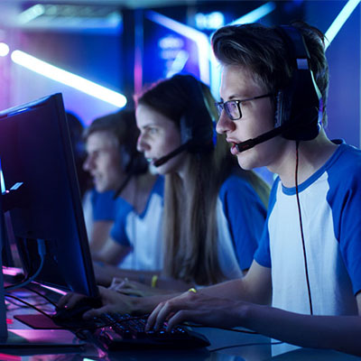
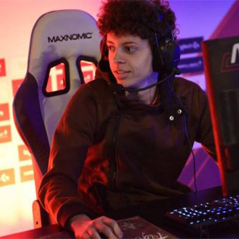

Accueil
Le sport éléctronique
-

Qu'est-ce que le E-Sport ?
Le sport électronique, ou e-sport en anglais, désigne des compétitions de jeux vidéo en réseau local (LAN party) ou via Internet sur consoles ou ordinateurs. Les joueurs professionnels (appelés pro gamers en anglais) évoluent en individuel ou appartiennent à une équipe. S'astreignant à un entraînement quotidien de plusieurs heures, ils participent aux compétitions organisées à travers le monde et peuvent vivre des gains remportés.
En principe, tous les jeux vidéo comportant un mode multijoueur sont englobés dans l'e-sport, mais dans les faits, quelques genres et titres phares sont les plus pratiqués : StarCraft 2, Hearthstone, Call Of Duty, FIFA, ShootMania Storm, Counter-Strike, Dota 2, League of Legends.
Très populaires en Corée du Sud, les tournois de jeux vidéo sont même retransmis à la télévision et les joueurs (appelés gosu qui signifie « chefs » en dialecte coréen) sont des vedettes.
-

Vivre de l'E-Sport
Les premiers tournois ont commencé en 1997 avec la création de la Cyberathlete Professional League et la première compétition à partir du jeu Quake. Les tournois professionnels les plus largement reconnus sont ceux de la Cyberathlete Professional League, des World Cyber Games ainsi que la Electronic Sports World Cup.
Au milieu des années 2000, les dotations des compétitions internationales d'e-sport les plus importantes se montaient à plusieurs millions de dollars. Un record fut atteint en 2015 à l'occasion de la compétition The International dédiée au jeu Dota 2 offrant plus de 18,4 millions de dollars de gains, dont plus de 6,6 millions pour l'équipe gagnante.
La France a attendu 2016 pour reconnaître le jeu vidéo en compétition et le statut de joueur professionnel.
-

L’E-Sport dans le monde, en France et à Tahiti
En 2010 est créé la Fédération internationale de sport électronique (Esif) dont la mission est de promouvoir cette discipline. En 2016, le Comité olympique reconnaît l'e-sport comme un sport, ouvrant la voie du processus d'intégration de ces compétitions lors de futurs J.O., sans calendrier précis. Cette initiative entraîne dans la foulée la création de l'e-sports Integrity Coalition qui a pour mission de lutter contre le dopage dans l'e-sport qui est apparu sous l'effet d'enjeux économiques grandissants.
En France, ce n'est qu'en octobre 2016 que la pratique du jeu vidéo en compétition et le statut de joueur professionnel sont reconnus à travers la loi pour une République numérique. La même année naît l'association France-eSports (loi 1091) qui réunit les principaux acteurs français du jeu vidéo avec pour mission de promouvoir et d'encadrer la pratique du sport électronique.
À Tahiti, il existe l'association : Tahiti Nui Arena. Fondé en 2001, elle a pour mission de promouvoir les jeux vidéos et le e-sport en Polynésie.
-

Premier tahitien dans l'E-Sport international
Alan Roger, ancien élève de la Mission, de La Mennais et de Gauguin à d’intégrer une équipe professionnelle australienne d’e-sport. Il s’était passionné pour les jeux électroniques à Tahiti en participant aux sessions organisées au réfectoire du Collège de Punaauia, organisé par Tahiti Nui Arena. Désormais étudiant à Rennes, Alan « Tiger » Roger a pris une année de dispo pour rejoindre le team Essendon Football Club de Melbourne.